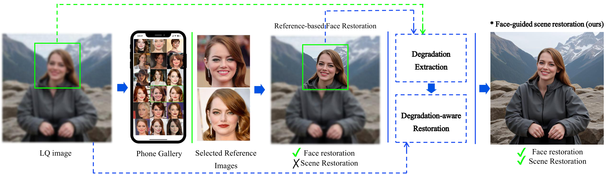
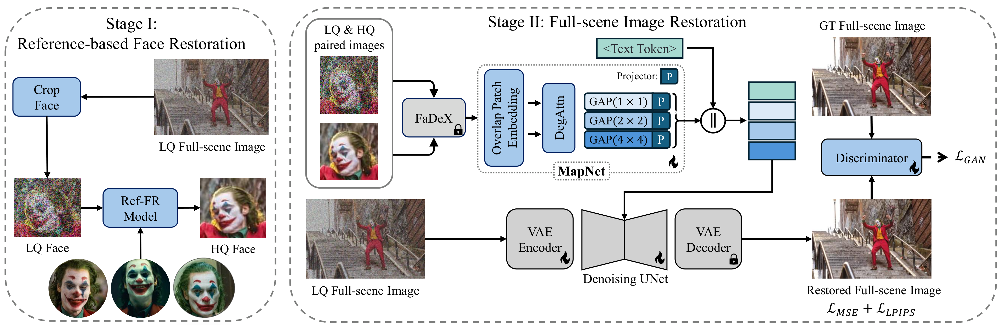
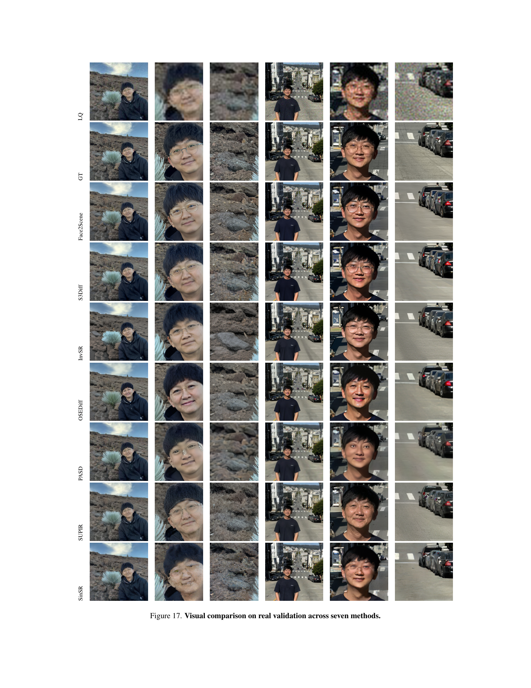

1. Stage 1: Ref-FR
Restore a high-quality face from the degraded input using same-identity references.
Accepted at CVPR 2026
A two-stage framework that estimates degradation from a restored face and uses it to guide full-scene restoration.
1University of Toronto | 2Vector Institute | 3AI Center-Toronto, Samsung Electronics | 4University Health Network | 5York University
amirhossein@cs.toronto.ca

Recent advances in image restoration have enabled high-fidelity recovery of faces from degraded inputs using reference-based face restoration models (Ref-FR). However, such methods focus solely on facial regions, neglecting degradation across the full scene, including body and background, which limits practical usability. Meanwhile, full-scene restorers often ignore degradation cues entirely, leading to underdetermined predictions and visual artifacts. In this work, we propose Face2Scene, a two-stage restoration framework that leverages the face as a perceptual oracle to estimate degradation and guide the restoration of the entire image. Given a degraded image and one or more identity references, we first apply a Ref-FR model to reconstruct high-quality facial details. From the restored-degraded face pair, we extract a face-derived degradation code that captures degradation attributes (e.g., noise, blur, compression), which is then transformed into multi-scale degradation-aware tokens. These tokens condition a diffusion model to restore the full scene in a single step, including the body and background. Extensive experiments demonstrate the superior effectiveness of the proposed method compared to state-of-the-art methods.

Face2Scene first applies a reference-based face restoration model to recover identity-faithful facial details from the degraded input. The restored-versus-degraded face pair is then encoded by FaDeX and transformed by MapNet into multi-scale degradation-aware tokens, which condition a one-step diffusion restorer to recover the full image, including face, body, clothing, and background.
Restore a high-quality face from the degraded input using same-identity references.
Extract a face-derived degradation embedding and map it to multi-scale conditioning tokens.
Condition a diffusion restorer to recover face, body, and background in one step.
Face2Scene consistently restores sharper facial identity cues and more coherent scene structure than prior restoration baselines. The gallery below is a curated selection from Figures 11-20 of the paper; additional qualitative comparisons remain available in the full PDF.
Across the paper and accompanying slides, Face2Scene is the strongest overall method across perceptual, fidelity, and quality metrics, while also producing more consistent restoration of the face, body, and background in side-by-side qualitative comparisons.
Curated synthetic examples from Figures 11, 13, and 16. These comparisons evaluate Face2Scene against S3Diff, InvSR, OSEDiff, PASD, SUPIR, and SinSR on the InScene synthetic benchmark.


Curated real-world examples from Figures 17, 19, and 20. These figures show Face2Scene compared with strong restoration baselines on real validation and real test samples.



Additional qualitative pages are available in Figures 12, 14, 15, and 18 of the paper.
Update the BibTeX entry when the final metadata is available.
@inproceedings{kazerouni2026face2scene,
title = {Face2Scene: Using Facial Degradation as an Oracle for Diffusion-Based Scene Restoration},
author = {Kazerouni, Amirhossein and Suin, Maitreya and Aumentado-Armstrong, Tristan Ty and Honari, Sina and Walia, Amanpreet and Mohomed, Iqbal and Derpanis, Konstantinos G. and Taati, Babak and Levinshtein, Alex},
booktitle = {Proceedings of the IEEE/CVF Conference on Computer Vision and Pattern Recognition (CVPR)},
year = {2026}
}